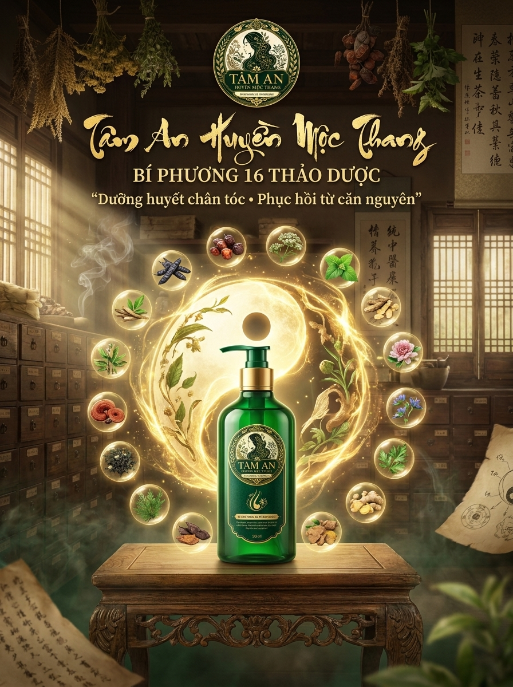
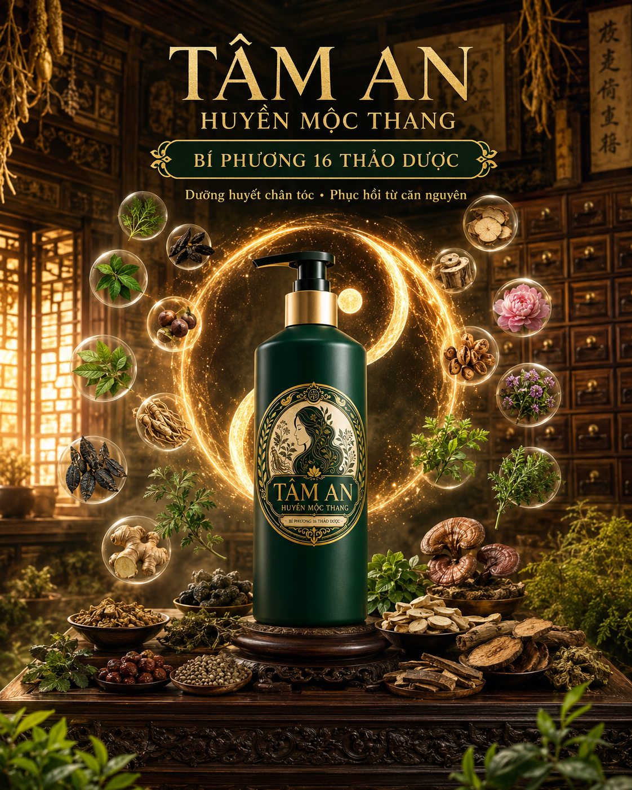
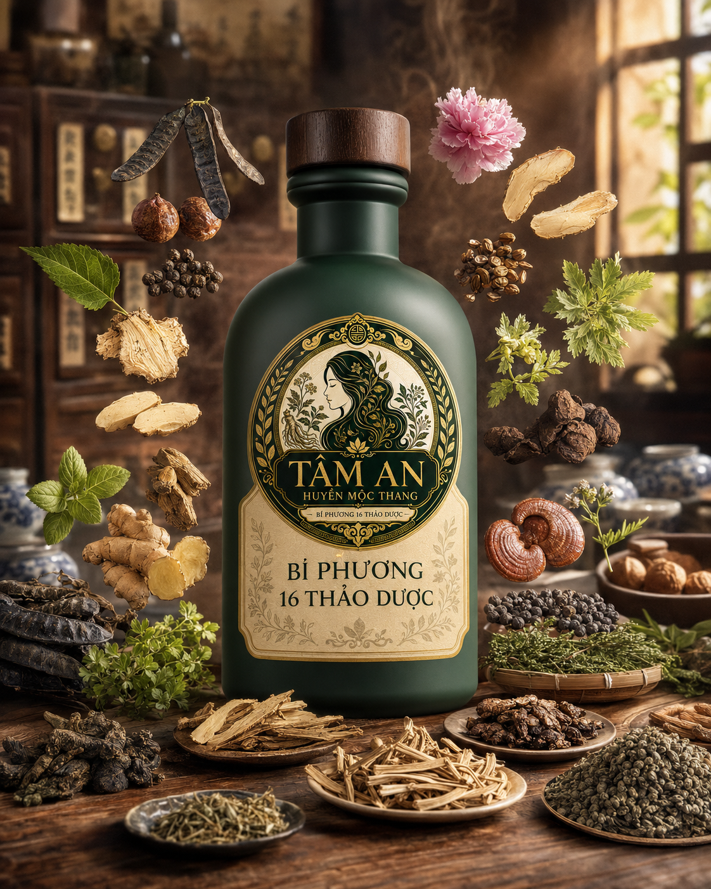

Tâm An Huyền Mộc Thang
Dầu Gội Thảo Dược Cô Đặc - Giải Pháp Phục Hồi Nang Tóc Từ 16 Thảo Dược Quý
Nói KHÔNG với chất tạo bọt hóa học (Sulfates) và Silicon bít tắc. Công thức bọt sinh học tự nhiên giúp làm sạch sâu, cắt đứt cơn ngứa gàu nấm, ôn thông kinh lạc vùng đầu, giảm rụng tóc và kích thích mọc tóc đen dày khỏe từ gốc.

Mái Tóc Và Da Đầu Bạn Có Đang Lên Tiếng Cảnh Báo?
Hầu hết các vấn đề về tóc xuất phát từ việc lạm dụng chất hóa học gây tổn thương vĩnh viễn nang tóc.
Rụng Tóc Kinh Niên
Tóc rụng thành từng búi khi gội, chải đầu hay ngủ dậy. Chân tóc mỏng yếu, nang tóc teo nhỏ khiến tóc mới không thể mọc lại.
Gàu Ngứa & Nấm Da Đầu
Cơn ngứa ngáy dai dẳng, da đầu bong tróc vảy trắng mất tự tin. Nấm da đầu Malassezia hoành hành do mất cân bằng hệ vi sinh.
Da Đầu Nhờn Bết Dính
Vừa gội đầu buổi sáng, buổi chiều tóc đã bết dầu xẹp lép, bít tắc chân tóc sinh mụn đỏ và mùi hôi khó chịu.
Hóa Chất Tích Tụ
Tóc khô xơ xác, chẻ ngọn do lạm dụng Silicon và Sulfate tạo bọt ảo trong dầu gội công nghiệp, bóp nghẹt sự sống nang tóc.
SỰ THẬT ĐÁNG SỢ VỀ DẦU GỘI HÓA HỌC:
Các hóa chất tẩy rửa mạnh (Sulfates) bào mòn lớp lipid bảo vệ da đầu, kết hợp với Silicon công nghiệp phủ bóng ảo tạo nên lớp màng bít tắc lỗ chân lông. Nang tóc không thể thở, không nhận được máu nuôi dưỡng, dẫn đến tình trạng lão hóa tóc sớm, rụng tóc hàng loạt và nhức mỏi vùng đầu kinh niên.


Hồi Sinh Mái Tóc Bằng Cổ Pháp Trị Liệu Đông Y
Không chỉ dừng lại ở một loại dầu gội làm sạch thông thường, Tâm An Huyền Mộc Thang là dòng dầu gội trị liệu cô đặc được bào chế theo phương thức y học cổ truyền. Chúng tôi ứng dụng nguyên lý "Ôn - Thông - Dưỡng - Phục" để nuôi dưỡng nang tóc và phục hồi da đầu khỏe mạnh tận sâu bên trong:
Bách Khoa Thảo Dược - Tinh Hoa Trong Từng Giọt Dầu Gội
Khám phá chi tiết công thức bí truyền 16 loại thảo dược quý giúp giải quyết triệt để mọi vấn đề về tóc.
Hành Trình Hồi Sinh Mái Tóc Trong 30 Ngày
Sự thay đổi kỳ diệu của da đầu và nang tóc được kiểm chứng lâm sàng qua từng tuần sử dụng.
SẠCH SÂU & THẢI ĐỘC DA ĐẦU
Saponin tự nhiên từ Bồ kết & Bồ hòn nhẹ nhàng hóa lỏng lớp dầu thừa bết dính và silicon bám lâu ngày. Da đầu lập tức có cảm giác thông thoáng, nhẹ nhõm, hiện tượng ngứa ngáy giảm rõ rệt ngay lần gội đầu tiên.
Thảo dược chính: Bồ kết, Bồ hòn, Xà sàng tử, Phù bình.DIỆT NẤM & CÂN BẰNG NHỜN
Hoạt chất Paeonol và Osthole thấm sâu tiêu diệt nấm Malassezia gây gàu nấm da đầu. Các nang tóc bị tổn thương do gãi và sưng đỏ được làm dịu hoàn toàn. Tuyến dầu bã nhờn được cân bằng giúp tóc bồng bềnh, không bết sau 48h.
Thảo dược chính: Tang bạch bì, Mẫu đơn bì, Lá dâu, Xà sàng tử.ẤM DA ĐẦU & HOẠT HUYẾT NANG TÓC
Gingerol và cineol kích thích các mao mạch máu giãn nở, tăng lượng tuần hoàn máu mang Vitamin B12, Acid Folic từ Đương quy đến bón phân nuôi dưỡng tế bào nang tóc. Cảm giác nhức đầu, nặng đầu biến mất nhờ cơ chế giải phóng phong hàn.
Thảo dược chính: Can khương (Gừng), Ngải cứu, Đương quy.MỌC TÓC MỚI & PHỤC HỒI ĐEN MƯỢT
Chiết xuất Hà thủ ô đỏ và Cỏ mực kích hoạt tổng hợp Melanin đen tóc. Lớp chất nhầy từ Vỏ cây du tạo màng sinh học khóa dưỡng chất, bảo vệ sợi tóc bóng mượt bồng bềnh tự nhiên. Tóc tơ con mọc lên như nấm, sợi tóc dày khỏe chắc chắn.
Thảo dược chính: Hà thủ ô, Cỏ mực, Trắc bách diệp, Nữ trinh tử, Vỏ cây du.Lựa Chọn Gói Trải Nghiệm Phù Hợp Cho Bạn
Đầu tư vào sức khỏe da đầu và mái tóc ngay hôm nay với các chương trình ưu đãi giới hạn độc quyền.
Gói Liệu Trình Cao Cấp
Được khuyên dùng cho người rụng tóc nặng, da đầu yếu và muốn phục hồi nhanh chóng từ gốc.
Gói Dùng Thử 0đ
Dành riêng cho 10 người đăng ký đầu tiên trong ngày muốn trải nghiệm hiệu quả của 16 thảo dược.
Nhận Ưu Đãi Độc Quyền Của Bạn
Vui lòng nhập chính xác thông tin bên dưới. Bộ phận chăm sóc khách hàng của Tâm An sẽ liên hệ với bạn trong vòng 2 giờ để xác nhận thông tin và hướng dẫn gửi hàng.
Câu Hỏi Thường Gặp
Giải đáp các thắc mắc phổ biến của khách hàng khi chuyển từ dầu gội công nghiệp sang dầu gội thảo dược Tâm An.
Sản phẩm hoàn toàn không sử dụng chất tạo bọt hóa học (Sulfate). Độ tạo bọt của dầu gội Tâm An là bọt sinh học dịu nhẹ từ quả Bồ kết và Bồ hòn đậm đặc. Bọt xốp nhẹ, tan nhanh nhưng có hiệu quả làm sạch sâu da đầu gấp 2 lần, hoàn toàn không gây khô ráp hay kích ứng, an toàn tuyệt đối kể cả khi vô tình dính vào mắt.
Thông thường, dầu gội thiên nhiên sẽ gây cảm giác hơi rít lúc ướt do thiếu Silicon phủ bóng. Tuy nhiên, Tâm An Huyền Mộc Thang giải quyết triệt để điều này bằng cách sử dụng **chất nhầy tự nhiên chiết xuất từ Vỏ cây du**. Lớp màng sinh học này phủ một lớp mỏng khóa ẩm trên tóc, giúp tóc mềm mượt, bồng bềnh tự nhiên khi khô mà vẫn thông thoáng chân tóc, hoàn toàn không bết dính.
- Sau 1 - 3 lần gội đầu tiên: Da đầu hết bết nhờn, thông thoáng nhẹ đầu, giảm ngứa gàu rõ rệt.
- Sau 7 - 10 ngày: Sợi tóc bám chắc hơn nhờ trắc bách diệp làm co se khít chân tóc, lượng tóc rụng giảm 70-80%.
- Sau 2 - 4 tuần: Chân tóc bắt đầu kích hoạt giai đoạn mọc tóc mới. Tóc con mọc lên tua tủa, dẻo dai và đậm màu dần nhờ Hà thủ ô đỏ và Cỏ mực nuôi dưỡng.
Có, sản phẩm hoàn toàn dịu nhẹ và được chứng nhận an toàn bởi Tâm An. Thành phần 100% thảo dược thô được cô đặc, không chứa chất bảo quản paraben, không hương liệu nhân tạo, rất thích hợp cho phụ nữ mang thai, sau sinh, trẻ nhỏ từ 2 tuổi và những người bị viêm da đầu, nấm ngứa nhạy cảm.